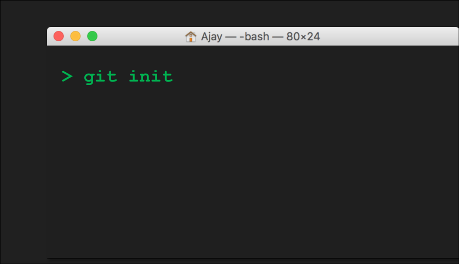
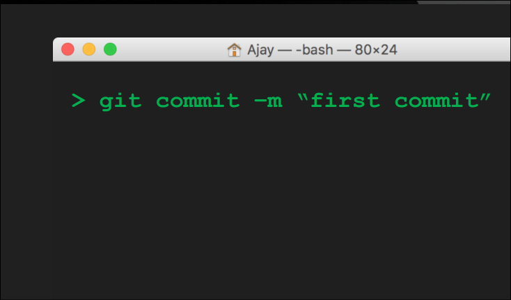
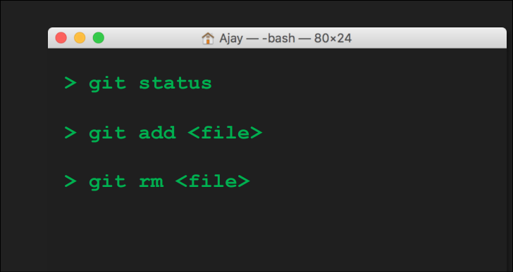
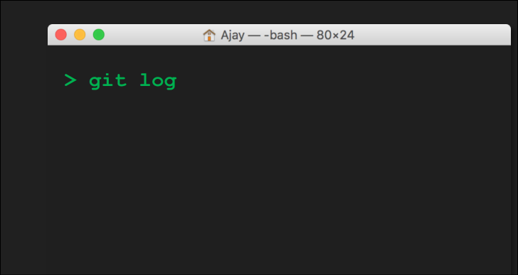
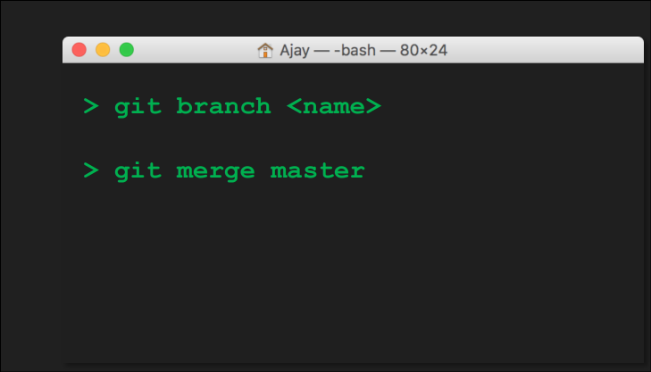
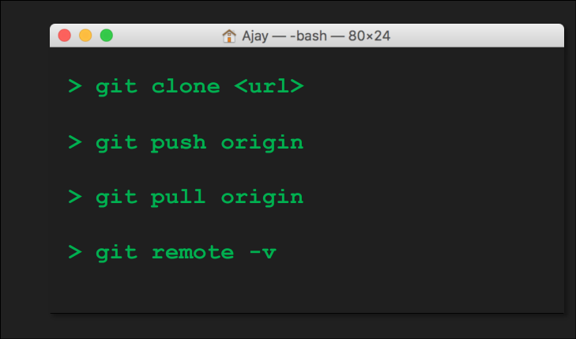

GIT provee el comando init para inicializar un repositorio, es decir, para pasar de una carpeta con el código fuente, a un repositorio sobre el cual GIT puede trabajar.

GIT provee el comando commit para crear un
punto en la historia del repositorio.
Commit se usa cuando se tiene un grupo de
cambios y se desea guardar ese estado del
proyecto.

Para ver el estado del «Staging Area», GIT provee
el comando status, este muestra cuales cambios
están agregados y cuales no.
Para agregar un cambio se usa el comando add y
para retirar un cambio se utiliza el comando rm.

GIT provee el comando log para visualizar la
historia del repositorio, esta historia esta dada
por los commits que se han realizado.
Cada commit se identifica con un SHA, el cual no
es más que una combinación de números y
letras.

Para administrar las ramas GIT provee el
comando branch, este permite crear, eliminar y
cambiar de rama.
Para unir dos ramas se usa el comando merge.

GIT ofrece el comando clone para clonar un
repositorio de manera local.
Para enviar los cambios al remoto se utiliza la
instrucción push y para obtener nuevos cambios se
usa la instrucción pull.
Para visualizar y controlar el repositorio remoto,
GIT ofrece el comando remote